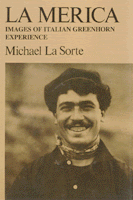

<body bgcolor="#FFFFFF" text="#000000" link="#0000FF" vlink="#CC0000" alink="#CC0000"><center><hr width="350" size="1" align="center" noshade>A powerful, moving picture painted by the narratives of first generation Italian Americans<hr width="350" size="1" align="center" noshade><p><a href="https://cdcshoppingcart.uchicago.edu/Cart/ChicagoBook.aspx?ISBN=9780877223825&&PRESS=temple" target="_top">Buy this book!</a> | <a href="https://cdcshoppingcart.uchicago.edu/Cart/Cart.aspx?PRESS=temple" target="_top">View Cart</a> | <a href="https://cdcshoppingcart.uchicago.edu/Cart/Cart.aspx?PRESS=temple" target="_top">Check Out</a></p><p></p></center><!--none//--><h1>La Merica</h1>
<H2>Images of Italian Greenhorn Experience</H2>
<h3>Michael A. La Sorte</h3>
<P>cloth 0-87722-382-3 $54.95, Oct 03, <FONT COLOR=#990033>Out of Stock Unavailable</FONT>
<br>paper 1-59213-234-0 $39.95, <FONT COLOR=#990033>Available</FONT>
<br>Electronic Book 1-43990-392-1 $39.95 <FONT COLOR=#990033>Out of Stock Unavailable</FONT>
<BR> 224 pp
5.5x8.25
</P><BLOCKQUOTE><I>"La Sorte aims to flesh out the immigrant experience in a way that more analytical and statistical studies have failed to do, and he succeeds to an extraordinary extent."</I>
<br>&#151<b><I>Contemporary Sociology</I></b><I></I></BLOCKQUOTE>
<p>Why would a man tie up a cheap suitcase with grass rope, leave his family and his <i>paesani</i> in Italy to risk his life and meager possessions among the dock thieves of Naples and Genoa to suffer the congestion and stench of steerage accommodations aboard ship, to endure the assembly-line processing of Ellis Island, to wander almost incommunicado through a city of sneering strangers speaking an unknown tongue, to perform ten to twelve hours of heavy manual labor a day for wages of perhaps $1.65&#151most of which he probably owed to the "company store" before he got it? Why were there not just a few such men but droves of them coming to the United States in the late nineteenth and early twentieth century? How did they survive and&#151some of them&#151prosper? How did they surmount the language barrier? Why did some stay, some go home, and some bounce back and forth repeatedly across the Atlantic?
<p>Michael La Sorte examines these questions and more in this lively study of Italian immigration prior to World War I. In exploring for answers, he draws upon the commentary of recent scholars, as well as the statistical documents of the day. But most important, he has searched out individual stories in the published and unpublished diaries, letters, and autobiographies of immigrants who lived the "greenhorn" (<i>grignoni</i>) experience.
<p>In their own language, the men bring to life the teeming tenements of New York's Mulberry Street, the exploitative labor-recruiting practices of Boston's North Square, and the harsh squalor of work camp life along the country's expanding railroad lines. What emerges is a powerful, moving, alternately funny and appalling picture of their everyday lives.
<p>Through detailed narration, La Sorte traces the men's lives from their native villages across the Atlantic through the ports of entry to their first immigrant jobs. He describes their views of Italy, America, and each other, the cultural and linguistic adjustments that they were compelled to make, and their motives for either Americanizing or repatriating themselves. His chapter on "Italglish" (a hybrid language developed by the greenhorns) will echo in the ears of Italian-Americans as the sound of their parents' and grandparents' voices.
<BR>&nbsp;<h2>Excerpt</h2><P>Excerpt available at <a href="http://www.temple.edu/tempress">www.temple.edu/tempress</a></p>
<BR>&nbsp;<h2>Reviews</h2>
<p><i>"His [Michael La Sorte's] book is full of personal stories, unencumbered by theories of immigrant history, of the men and women who came to a strange land with little money, no knowledge of the language, and only the slightest concept of exactly how they would survive.... His tale is both sad and inspirational."</i>
<br>&#151<b><i>The Boston Globe</i></b>
<p><i>"...a brilliantly conceived and executed book, profoundly moving. It will haunt me."</i>
<br>&#151<b>Bart Giamatti</b>, former President, Yale University
<p><i>"...intimate and authentic."</i>
<br>&#151<b>Gay Talese</b>, <i>The New York Times Book Review</i>
<p><i>"...A scholarly gem."</i>
<br>&#151<b>Professor Jerre Mangione</b>
<BR>&nbsp;<H2>About the Author(s)</H2>
<table><tr><td valign="top"><img src="/tempress/authors/368_au.gif" height="90" width="75"></td><td width="100%" valign="middle"><p><b>Michael A. La Sorte</b> is Professor of Sociology, Emeritus, at the State University of New York, Brockport.</P></td></tr></table>
<BR><H2>Subject Categories</H2>
<p><A HREF="/tempress/history.html" TARGET="_top">History</a>
<BR><A HREF="/tempress/race.html" TARGET="_top">Race and Ethnicity</a>
<BR><A HREF="/tempress/sociology.html" TARGET="_top">Sociology</a>
</p>
<p align="center"><a href="https://cdcshoppingcart.uchicago.edu/Cart/ChicagoBook.aspx?ISBN=9780877223825&&PRESS=temple" target="_top">Buy this book!</a> | <a href="https://cdcshoppingcart.uchicago.edu/Cart/Cart.aspx?PRESS=temple" target="_top">View Cart</a> | <a href="https://cdcshoppingcart.uchicago.edu/Cart/Cart.aspx?PRESS=temple" target="_top">Check Out</a></p><p><font face="Arial" size="1"><a href="copyright.html" onMouseOver="window.status='Web Copyright Policy';return true;" onMouseOut="window.status=''" title="Web Copyright Policy">&copy;</a> 2015 <a href="http://www.temple.edu" target="new" onMouseOver="window.status='Link to Temple University home page';return true;" onMouseOut="window.status=''" title="Link to Temple University home page">Temple University</a>. All Rights Reserved. http://www.temple.edu/tempress/titles/368_reg.html</font></p>